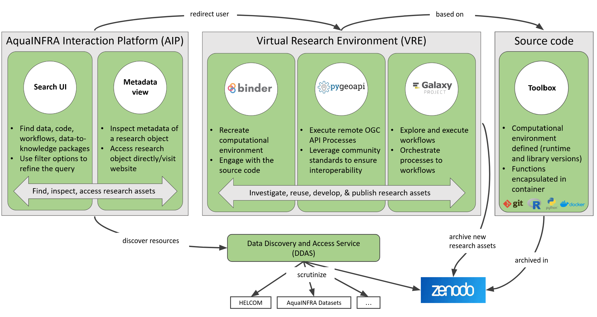

Introduction AquaINFRA
The AquaINFRA project (2023–2026) is developing a next-generation virtual environment equipped with FAIR (Findable, Accessible, Interoperable, and Reusable) multidisciplinary data and services.
Our mission is to support marine and freshwater scientists and stakeholders in restoring healthy oceans, seas, coastal, and inland waters by bridging the gap between isolated research infrastructures and national borders.
[!IMPORTANT] Main Resource: For the most up-to-date project news and developments, visit the official AquaINFRA Website.
📽️ Video Tutorial: Getting Started
Learn how to search for data on the AIP, subset it via DDAS, and import it directly into your analysis history in Galaxy.
Core Objectives:
- Marine-Freshwater Integration: Breaking silos to enable joint collaboration across the entire land-sea continuum.
- EOSC-Based Infrastructure: Building a cross-country discovery mechanism as part of the European Open Science Cloud (EOSC).
- Spatio-temporal Analysis: Providing standardized services for biological, chemical, and physical data modeling.
- Reproducible Science: Ensuring that every analytical workflow can be shared, reused, and validated by the community.
Project Methodology: Official Architecture
The AquaINFRA ecosystem connects disparate data sources through a unified analytical pipeline, ensuring interoperability with the Digital Twin of the Ocean (DTO) and EOSC components.

[!NOTE] AquaINFRA works in close collaboration with projects like Blue-Cloud, ILIAD, and EDITO to enhance the Digital Twins of the Ocean with high-quality aquatic data and models.
Partners & Target
The AquaINFRA project is a collaborative effort involving a consortium of 21 international partners across Europe, including universities, SMEs, and research institutions.
Who is it for?
Marine and freshwater scientists, data analysts, and researchers looking for reproducible workflows and FAIR data services.
Why use it?
To access multidisciplinary data, high-performance computing resources, and standardized analytical pipelines in a unified virtual environment.
What is provided?
Pre-configured tools (e.g., Galaxy, Jupyter), harmonized datasets, and step-by-step training modules for real-world environmental use cases.
How to contribute?
Researchers can share their own notebooks, tools, and datasets through the AquaINFRA infrastructure to foster community collaboration.
Our Consortium
Coordinated by Aalborg University (AAU) in Denmark, our partnership brings together leading experts in aquatic science and data technology.
Representative Partners:
- Scientific Institutions: BOKU (Austria), CSIC (Spain), CREAF (Spain), SYKE (Finland), NIVA (Norway), HEREON (Germany).
- Infrastructures & Organizations: HELCOM (Baltic Sea), CSC (Finland), Maanmittauslaitos (Finland).
- Technical Specialists: 52°North (Germany), Blue Lobster IT (UK).
View the full partner list on the official site
The AquaINFRA Virtual Research Environment
The AquaINFRA Virtual Research Environment (VRE) is a modular and extensible platform built on established open-source technologies. It serves as the analytical engine of the project, enabling researchers to run complex workflows through a user-friendly interface.
Key Technologies
- Galaxy Platform: A powerful web-based gateway for accessible and reproducible genomic and spatial analysis.
- Aqua Interaction Platform (AIP): Seamlessly search and discover data across Earth observations and European hydrography.
- Binder & OGC API: Integrated services for interactive computing and standardized data processing.
- Language Support: Native support for R and Python environments.
Why use the VRE?
- FAIR Processing: Workflows developed in our case studies are published as D2KP with full provenance.
- Cross-Domain Discovery: Discover aquatic digital resources across disciplines and national borders.
- High-Performance Computing: Access the resources needed for large-scale spatio-temporal modeling.
[!TIP] Visit the AquaINFRA VRE Portal to explore community-tailored tools and start your first analysis.